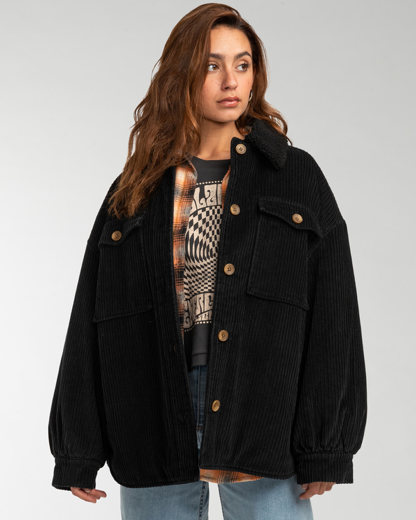
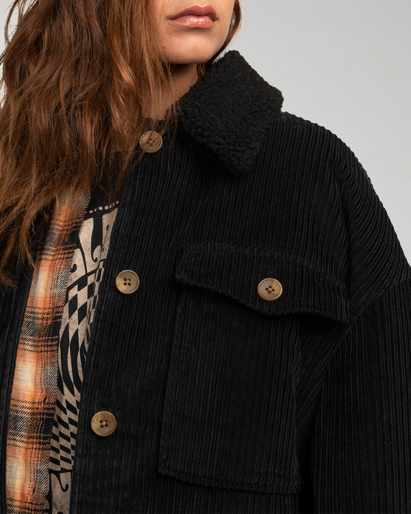
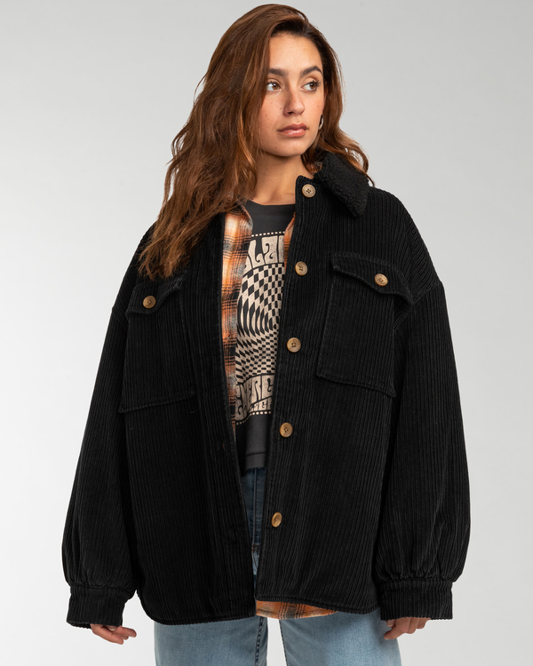
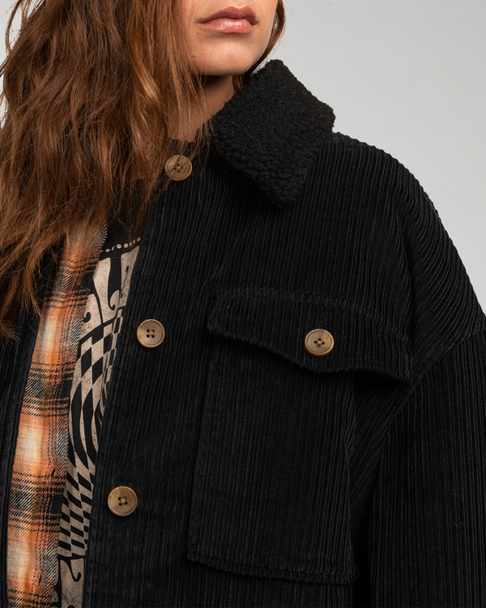

Matière / composition
La matière première est majoritairement végétale, très probablement du coton. L’aspect mat, la tenue relativement souple mais structurée et le toucher doux du velours vont dans le sens d’un velours côtelé coton.
Fil
Les fils sont simples, réguliers et continus :
- Le fil de fond est un fil de coton peigné, fin à moyen, assurant la solidité de l’étoffe.
- Le fil formant le velours (poil) est un fil supplémentaire, également simple, destiné à être coupé puis relevé pour créer le relief caractéristique des côtes.
Construction textile
Étoffe tissée en chaîne et trame. Structure épaisse et nervurée, avec des côtes verticales régulières (côtelé fin à moyen).
Armure
Il s’agit d’un tissu chaîne et trame, avec une armure complexe de type velours.
Ennoblissement couleur
La couleur noire est obtenue par une teinture en pièce, après tissage.
Ennoblissement d’apprêt
- Grattage / relevage du poil pour créer l’aspect velours
- Coupe du poil (opération spécifique au velours)
- Adoucissant pour améliorer le toucher
- Probable apprêt de stabilisation (anti-retrait, anti-froissage léger)
Contexture (chaîne et trame)
La contexture est serrée et régulière. Les fils de chaîne et de trame sont disposés de manière dense afin de supporter la structure velours. La présence de fils de poil supplémentaires crée un relief en côtes longitudinales bien marquées. L’étoffe est compacte, peu ajourée, non transparente, avec une bonne cohésion entre les fils, ce qui garantit une bonne tenue et une résistance à l’usage.
Poids
Poids estimé : 250 à 350 g/m², typique d’un velours côtelé destiné à l’habillement structuré (pantalon, veste, jupe).
Produit fini
Tissu adapté pour une veste en velours noir côtelé.
Voir produit
 


